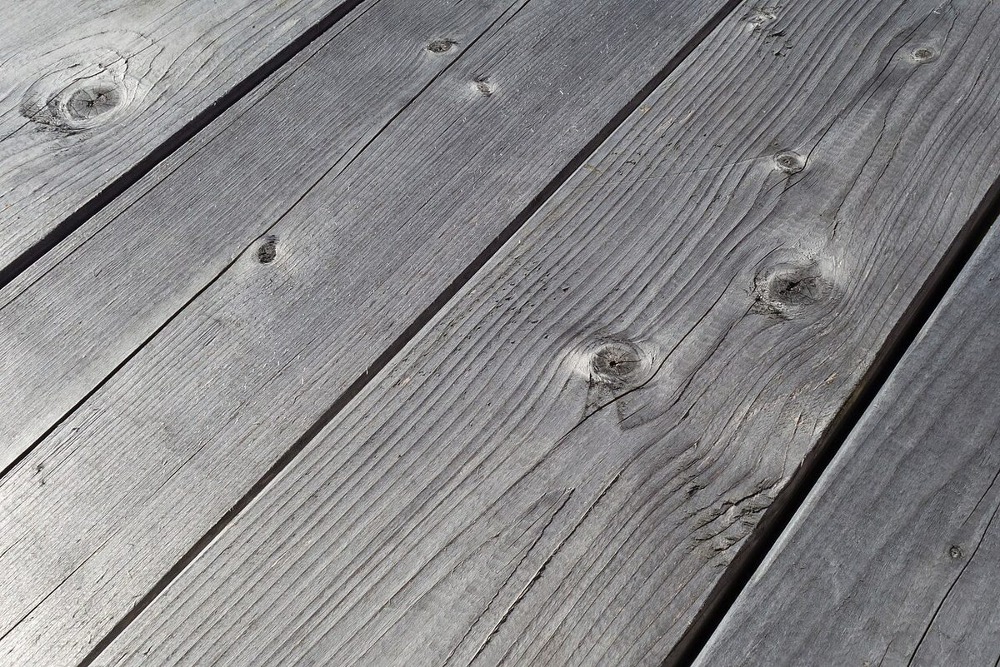

二折め
店のこと
お店について確認できているのは、所在地・電話番号・Instagramのアカウントです。
「制作側の連想」の部分は、制作側が想像して書いたものです。お店の実際の様子・考え・メニューとは関係がありません。
確認できていること
- 店名は「食堂喫茶CocoKana」、業種は食堂・喫茶
- 所在地は岩手県遠野市中央通り２−１(〒028-0523)
- 電話番号は 0198-62-4384
- Instagramのアカウントは @cocokana.tono
- 営業時間・定休日・メニュー・価格・ご予約・駐車場は準備中

制作側の連想
折り方は五通り。
ここでは、紙ナプキンの折り方になぞらえて、このサイトのページを五つの「折り」に見立てました。名前のつけ方も形も、制作側の遊びです。
- 一折 ホーム半分に折る。まず全体を見渡すページ。
- 二折 店のことさらに半分。確認できた事実だけを置くページ。
- 三折 メニュー三角に折る。いまは準備中のページ。
- 四折 口コミ四つに折る。想像で書いた声を置くページ。
- 五折 アクセスひらいて場所へ。住所と地図のページ。
イメージ写真
